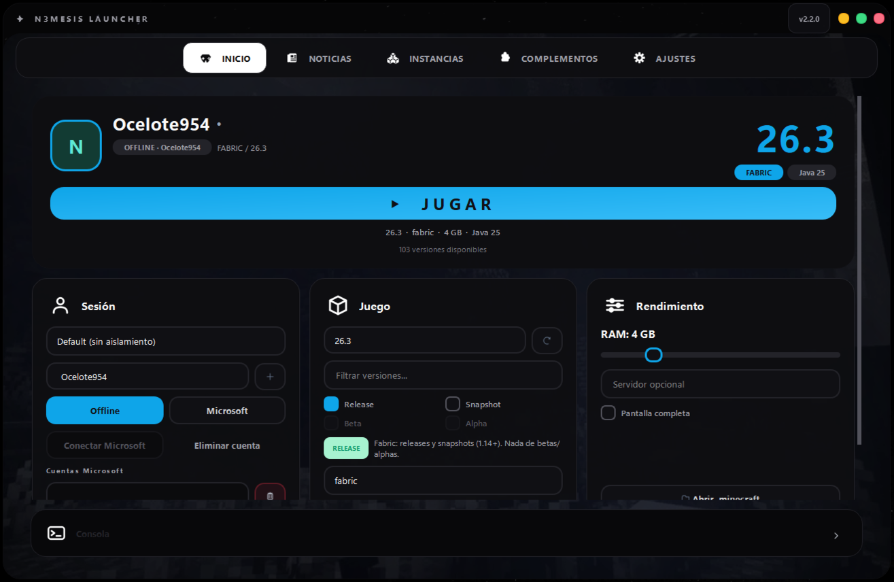
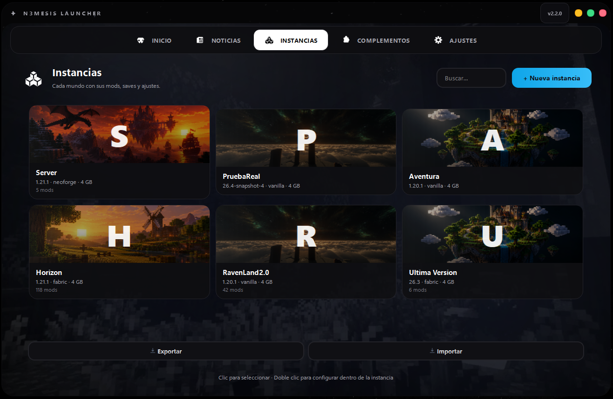
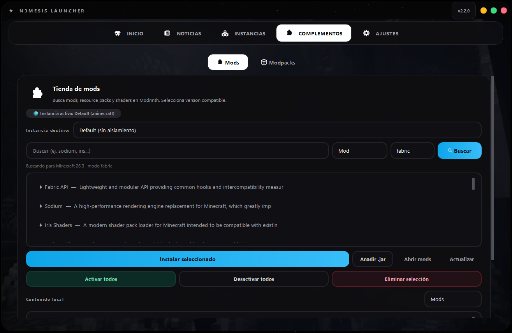
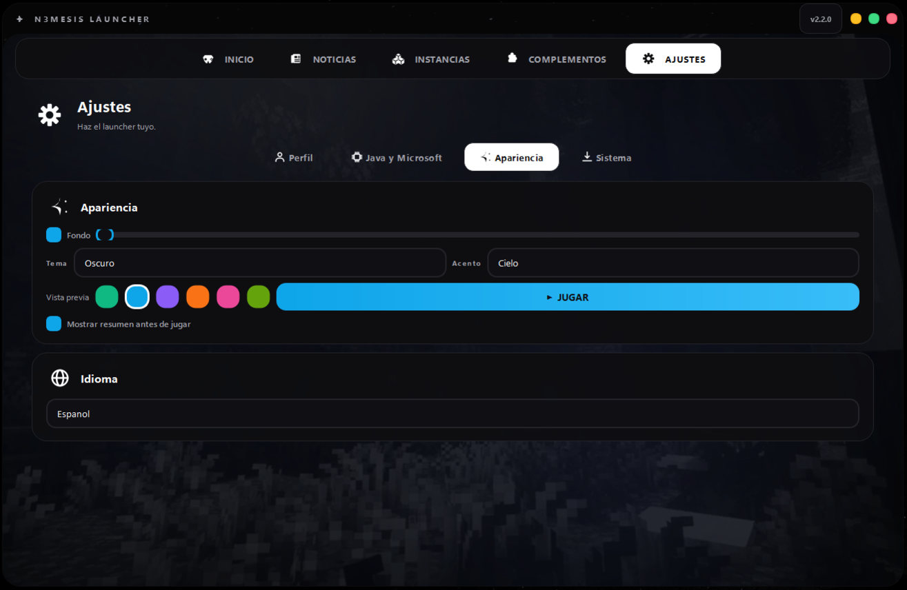

Juega a tu manera
Inicia Minecraft: Java Edition en Vanilla, Forge, Fabric, Quilt o NeoForge. Configura la RAM por instancia, entra directamente a un servidor y consulta la consola con registros en tiempo real.
Minecraft Java Edition. A tu manera.
El launcher de Minecraft: Java Edition que reúne instancias independientes, instalación automática de Java, todos los loaders principales y una tienda de complementos integrada. Una experiencia de escritorio rápida, elegante y organizada para Windows.
Versión 2.1 · Windows 10/11 de 64 bits
Inicia Minecraft: Java Edition en Vanilla, Forge, Fabric, Quilt o NeoForge. Configura la RAM por instancia, entra directamente a un servidor y consulta la consola con registros en tiempo real.
Cada instancia mantiene sus propios mundos, mods, configuraciones y memoria asignada. Créala, duplícala, renómbrala, impórtala o expórtala como ZIP.
El launcher detecta instalaciones compatibles y descarga automáticamente la versión de Java necesaria cuando hace falta. Es compatible con Java 8, 17, 21 y 25.
Busca e instala mods, resource packs, shaders, datapacks y modpacks. Consulta compatibilidad con tu versión y loader y gestiona los complementos desde la aplicación.
Utiliza perfiles offline con varios nombres o inicia sesión con Microsoft mediante el flujo de código de dispositivo. Gestiona varias cuentas y consulta el estado de la sesión.
El tema AURORA ofrece modos claro y oscuro, seis colores de acento, fondos personalizables, animaciones suaves y nueve idiomas con cambio instantáneo.
Explora la interfaz de escritorio de N3mesis Launcher. Capturas en formato panorámico para mostrar la experiencia real en Windows.




Los tokens de Microsoft se protegen mediante DPAPI de Windows y no se guardan en texto plano. La aplicación renueva las sesiones cuando corresponde y muestra su estado.
Al instalar un modpack, puedes crear automáticamente una instancia propia para mantener sus archivos separados del resto de tus configuraciones.
El actualizador integrado consulta las publicaciones de GitHub Releases y permite actualizar la aplicación desde sus paquetes publicados.
Guía inicial, noticias integradas, avisos discretos, atajos de teclado y una consola para seguir el inicio del juego.
No necesitas instalar Python ni Java manualmente para utilizar el ejecutable. Se requiere conexión a internet para las primeras descargas de Java, Minecraft y complementos.
No. El launcher detecta una instalación compatible y, si no encuentra la necesaria, descarga automáticamente la versión correspondiente.
No. Cada instancia mantiene sus propios mundos, mods y configuraciones en una carpeta independiente.
Sí. Puedes iniciar sesión mediante el flujo de código de dispositivo. También existen perfiles offline.
Dentro de la carpeta de cada instancia, en su subcarpeta saves. La ruta base es %APPDATA%\.minecraft\launcher\instances\.
Los tokens se cifran localmente. La aplicación se comunica con los servicios necesarios para la autenticación y las funciones online, como Microsoft/Mojang y Modrinth.
Los ejecutables no firmados pueden generar avisos. Descarga siempre el programa desde la publicación oficial del proyecto y comprueba su procedencia antes de ejecutarlo.
Descarga el instalador oficial para Windows desde GitHub Releases. Comprueba que el archivo corresponde a la versión 2.1 antes de ejecutarlo.
N3mesis Launcher es un proyecto independiente y no está afiliado, respaldado ni asociado oficialmente con Mojang o Microsoft. Minecraft es una marca de sus respectivos propietarios.